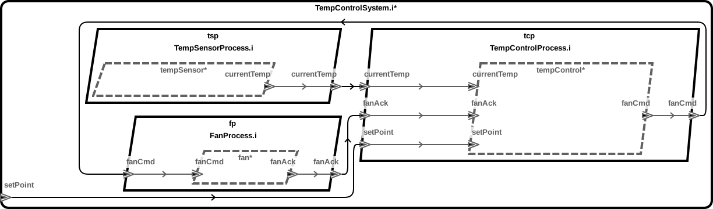

Regenerate Code (optional)
./aadl/bin/run-hamr-Linux.sh
How To Build
./hamr/slang/bin/transpile.cmd
./hamr/c/bin/compile.cmd
How To Run
./hamr/c/bin/run.sh
./hamr/c/bin/stop.sh
Regenerate Code (optional)
./aadl/bin/run-hamr-SeL4.sh
How To Build/Run (via QEMU)
./hamr/slang/bin/transpile-sel4.cmd
./hamr/camkes/bin/run-camkes.sh -s